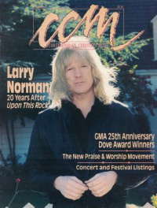

CMnexus
:
Contemporary Christian culture, music, and media.
Magazines
Profiles
Dove Awards
cmnexus.org
CM
nexus
→
Profiles
→
N
→
Brian Quincy Newcomb
Brian Quincy Newcomb
< -- Prev
ious
Next-- >
1
2
3
4
5
6
7
8
9
10
Writing credits listing
Spr 1989
in
Harvest Rock Syndicate
4.1
The Indigo Girls
-
Indigo Girls
Show of Hands
-
Show of Hands
Guadalcanal Diary
-
Flip-Flop
XTC
-
Oranges & Lemons
Robyn Hitchcock
-
Queen Elvis
May 1989
in
CCM
11.11
Mass
-
Voices in the Night
Recess
-
Recess
Andy Pratt
-
Not Just for Dancing

Jun 1989
in
CCM
11.12
"The Long Journey Home"
Larry Norman
Mylon & Broken Heart
-
Big World
The Altar Boys
-
Forever Mercy
Larry Norman
-
Home at Last
The Choir
-
Wide-Eyed Wonder Videos
Jul 1989
in
CCM
12.1
"These Chicago Boys (and a Girl) Just Wanna Have Fun"
Recess
Remanant
-
Step In Faith
Paradox
-
Power and Glory
Marc Jonathon Haney
-
Honest to God and Down to Earth
Sum 1989
in
Harvest Rock Syndicate
4.2
"Wearing Flip-Flops on the Spirit Train"
Guadalcanal Diary
Peter Case
-
The The Man with the Blue, Postmodern Fragmented Neo-traditionalist Guitar
Geoff Moore & the Distance
-
Foundations
10,000 Maniacs
-
Blind Man's Zoo
Roy Orbison
-
Mystery Girl
Tom Petty and the Heartbreakers
-
Full Moon Fever
Bash-N-The Code
-
More Than Enough
Al Green
-
I Get Joy
various artists -
Adventures in the Land of Big Beats and Happy Feet
DeGarmo and Key
-
This Time Thru + This Ain't Hollywood
,
Mission of Mercy
Aug 1989
in
CCM
12.2
"Because of Jesus"
Whiteheart
Kim Boyce
-
Love Is You to Me
Greg and Rebecca Sparks
-
Sparks
David Zaffiro
-
The Other Side
Veil of Ashes
-
Pain
Van Morrison
-
Avalon Sunset
Violent Femmes
-
3
Sep 1989
in
CCM
12.3
Michael Peace
-
Vigilante of Hope
Jacob's Trouble
-
Door into Summer
Oct 1989
in
CCM
12.4
Liaison
-
Liaison
various artists -
VH-7
Fall 1989
in
Harvest Rock Syndicate
4.3
"Heed The Call"
The Call
"Just Folk!"
The Indigo Girls
"Dancin' Her Heart Away"
Kim Boyce
The Swirling Eddies
-
Outdoor Elvis
Bob Mould
-
Workbook
Peter Gabriel
-
Passion
Don Henley
-
The End of the Innocence
Jackson Browne
-
World In Motion
Pierce Turner
-
The Sky and the Ground
The Cure
-
Disintegration
The The
-
Mind Bomb
Kim Hill
-
Talk About Life
< -- Prev
ious
Next-- >
1
2
3
4
5
6
7
8
9
10
CMnexus
(noun)
The magazine index
of modern music
and Christianity
© 2011 CMnexus. Last updated May 2025.
Contact:
Rants and other correspondence to:
editor -AT- cmnexus
-DØT- org
About